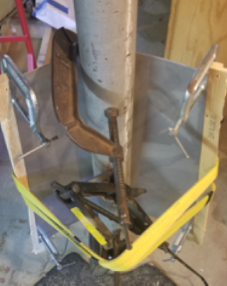

Pulse Jet Engine
This project was inspired by famous YouTuber Colin Furze and his various pulse jet projects. This design has no moving parts and works by alternating air intake and exhaust cycles (pulses) through each of it's tail pipes. The combustion process works as follows:
- Air flows into the shorter pipe as fuel is injected into the combustion chamber
- A spark plug or match ignites the fuel-air mixture within the combustion chamber, which explodes the mixture and pushes exhaust out of the shorter pipe first
- Next, the shorter pipe intakes air as a result of the negative pressure differential within the pipe caused by exhausting the gases while the longer pipe pushes exhaust out. Each time air is sucked back into the combustion chamber, the flame front is also sucked back, thus reigniting the fuel-air mixture
- The shorter and longer tail pipes continue to intake and exhaust in an alternating pattern. This results in a loud roaring sound
Manufacturing Process Gallery

